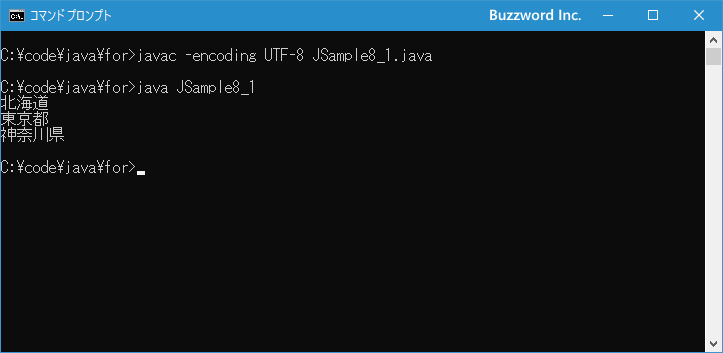

拡張for文(for-each文)を使って要素を順に取得する
Java で配列やコレクションの要素を順に取り出すときに利用できる拡張 for 文の使い方について解説します。拡張 for 文は for-each 文と呼ばれることもあります。基本の for 文とは異なり、対象の配列やコレクションの要素の数で繰り返しを行う回数が決まります。
目次
拡張for文の使い方
拡張 for 文は他の繰り返しを行う文とは異なり条件式がありません。対象となる配列やコレクションの要素の数だけ繰り返しを行います。書式は次のとおりです。
for (データ型 変数名: コレクション){
// 繰り返しの中で実行される処理
...
}
コレクションに指定した配列やコレクションから要素を一つ取りだし変数に格納します。そのあとで { から } のブロック内に記述された処理を上から順番に実行します。そして次の要素を取り出して変数に格納したあと再びブロック内の処理を実行します。要素をすべて取り出したら繰り返し処理は終了します。
次のサンプルをみてください。
String name[] = {"Suzuki", "Katou", "Yamada"};
for (String str: name){
System.out.println(str);
}
この場合、次のように処理が実行されています。
1)配列から要素を取り出し変数 str に格納する(str="Suzuki") 2)ブロック内の処理を実行(画面に変数 str の値を出力) 3)繰り返しの1回目終了 4)配列から要素を取り出し変数 str に格納する(str="Katou") 5)ブロック内の処理を実行(画面に変数 str の値を出力) 6)繰り返しの2回目終了 7)配列から要素を取り出し変数 str に格納する(str="Yamada") 8)ブロック内の処理を実行(画面に変数 str の値を出力) 9)繰り返しの3回目終了 10)配列から要素をすべて取り出したので繰り返しを終了
結果的に繰り返し処理は 3 回実行され、それぞれ Suzuki と Katou と Yamada を画面に出力します。
なお同じ処理を基本の for 文を使って次のように行うこともできます。
String name[] = {"Suzuki", "Katou", "Yamada"};
for (int i = 0; i < name.length; i++){
System.out.println(name[i]);
}
for 文を利用して配列のインデックスを順番に指定し、配列の要素を取得して画面に出力しています。今回のような用途であれば拡張 for 文の方が簡潔に記述することができますが、インデックスを順に指定して処理を行いたい場合には、基本の for 文を利用する必要があります。用途に応じて使い分けてください。
それでは簡単なサンプルプログラムを作って試してみます。テキストエディタで次のように記述したあと、 JSample8-1.java という名前で保存します。
class JSample8_1{
public static void main(String[] args){
String pref[] = {"北海道", "東京都", "神奈川県"};
for (String str: pref){
System.out.println(str);
}
}
}
コンパイルを行います。
javac -encoding UTF-8 JSample8_1.java
その後で、次のように実行してください。
java JSample8_1

拡張 for 文を使って配列の要素を順に取り出して画面に出力しました。
-- --
Java で配列やコレクションの要素を順に取り出すときに利用できる拡張 for 文の使い方について解説しました。
( Written by Tatsuo Ikura )

著者 / TATSUO IKURA
初心者～中級者の方を対象としたプログラミング方法や開発環境の構築の解説を行うサイトの運営を行っています。